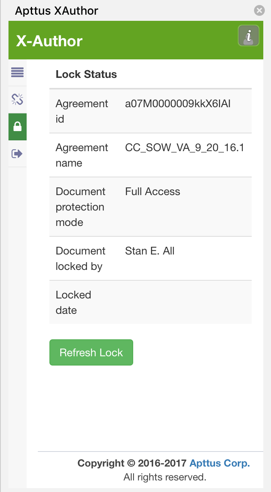

Locking and Unlocking Documents
When you check out a document in X-Author, the document is locked for editing and cannot be checked out by anyone else. Anyone with proper permissions for the document's agreement record can still view and/or download the document, but they cannot make edits and check the document back in while you have it locked.
You can always check the lock status of a document by clicking on the Lock Status tab.
Locks can only be released when a user either manually releases the lock, or checks the document into Salesforce.
By default, document locks are used for agreement documents. However, if the Comply System Property Use Agreement Locks for Versioning is enabled the agreement will be locked instead of a single document. This means that while you or anyone else has a document checked out that no other documents for the same agreement record can be checked out. Be sure to check whether or not this property is enabled before you begin editing a contract document.
To release a document lock
Before you can release a lock on a document, it must be checked out. Releasing a lock reverts the check-out of the document you are working on without checking it in. You can only release a lock when you have the document open in X-Author.
-
From the X-Author pane, click on the
Lock Status tab icon.
The Lock Status page shows agreement details and information on the current document lock.

-
If you chose to release the lock, the document check-out is reverted. Any changes
you made while the document was checked out are not saved.
The page refreshes to reflect unlocked status and most menu options are disabled.

If you release a document lock in error and want to continue working with the document, go to the Lock Status page and click Acquire Lock.
Refreshing document lock status
Because more than one user may have access to agreement documents on an agreement record, you may come across a situation where another user has checked out the document.
From the Lock Status tab, you can click the Refresh Lock button at any time to display the current lock status for the open document (except for when you have checked out the document already). If the document is checked out by another user, the only actions you can take are to List Agreements and Refresh Lock.
Consider the following example:
Use Case: Reacquiring the document lock from another user
You have opened a contract document version from the agreement's Document Version Details in Microsoft Word. Another user checks out the document before you.
A message is displayed showing that the other user controls the lock.

The document cannot be checked out, because another user has already locked it.
You click on the Lock Status tab to view the current lock status. The "Document locked by" field shows the document is locked by another user.

The other user releases the document lock or checks in a new version. You click Refresh Lock to refresh the current lock status. The pane refreshes, showing updated lock status details.
You click Acquire Lock to lock the document and start working. All menu items are enabled.
Opening a Document You Have Already Checked Out
In some situations, you may close an open document in X-Author which you have checked out, without releasing the lock or checking in the document. The document remains locked by you, and cannot be edited by anyone else until you release the lock or complete a check-in.
When you open an agreement document in X-Author that is already locked by you, you should see the following message displayed at the bottom of the X-Author pane.
Continue working on the document as normal.